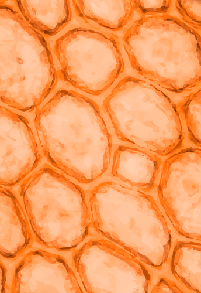

Enunciado: contesta y dialoga con tus padres o las personas con las que vivas las siguientes preguntas:
¿Qué es una célula?
¿Por qué es importante la célula en la vida de los organismos?
¿Cómo crees que se descubrió la célula?
Ahora observa y escucha con atención el siguiente video
Objetivo de aprendizaje: identificar las características comunes de algunas células.
Enunciado: de acuerdo con lo aprendido en el video, organiza el siguiente texto arrastrando los conceptos al lugar correcto. Luego, conversa con tus padres o hermanos: ¿qué tienen en común el paramecio, las diatomeas y las amebas?
Duración: 30 minutos.
Arrastra las palabras a los espacios en blanco para completar las frases del texto.
El es un , quiere decir que tiene una sola . Por ejemplo, las bacterias son .
¡Muy bien!
Las son pequeñas microscópicas . Estos viven en el o sobre superficies .
¡Muy bien!
La es un organismo y tiene formas diversas. Viven en el o en la y se alimentan de más pequeños o de en .
¡Muy bien!
Los organismos tienen o más y se encuentran en, y algunas .
¡Muy bien!
2.1 Teoría celular: ¿quién descubrió la célula?
Para que enriquezcas tus conocimientos y aprendas más del tema, visita el siguiente enlace.
Video: La teoría celular
Duración: 3:26 minutos
Enunciado: en el video puedes encontrar a los científicos que inventaron la célula.
Objetivo de aprendizaje: explica la relación existente entre la función y estructura de las células, tejidos, órganos y sistemas.
Enunciado: en compañía de tus padres desarrolla el siguiente taller, puede ser en hojas de bloc o en tu cuaderno.
Duración: 2 horas.
Taller 1
-
Si tu fueras Robert Hooke y mientras observas un trozo de corcho a través de un microscopio, vieras una imagen como la que se presenta a continuación ¿cómo la describirías?
Corcho a través de microscopio. (2020) - Si tuvieras que explicarle a alguien qué es la célula, ¿qué le dirías? Puedes hacer una historieta para responder.
- ¿Por qué la célula es la unidad fundamental de los seres vivos?
- ¿Existen seres vivos que sobreviven con una sola célula?, ¿conoces alguno?. Da ejemplos. Puedes dibujar o buscar imágenes, recortarlas y pegarlas.
- Observa el siguiente video y después dibuja algunos seres pluricelulares. También puedes buscar
imágenes, recortarlas y pegarlas.
Video: Seres unicelulares y pluricelulares.
Duración: 3:26 minutos
Enunciado: en este video puedes ver diferentes tipos de seres unicelulares y pluricelulares
- ¿Cuál es la estructura de la célula que le permite intercambiar nutrientes, agua y oxígeno con el medio?, ¿cómo crees que ocurre este proceso?
- En el interior de la célula, ¿quién contiene la información necesaria para que esta cumpla sus funciones?
2.2 La célula
Lee con mucha atención el siguiente texto. Después de leer, escribe en tu cuaderno todas las palabras desconocidas y busca su significado en el diccionario.
La célula
La célula es el elemento de menor tamaño que puede considerarse vivo, pero es la unidad fundamental de todo ser vivo. Los organismos vivos pueden clasificarse según el número de células que posean: si solo tienen una, se les denomina unicelulares como pueden ser los protozoos o las bacterias, entre otros organismos microscópicos; si tienen más de una célula, se les llama pluricelulares, dentro de este grupo están los animales, las plantas o el ser humano. Existen dos tipos de células las células procariotas y las células eucariotas.
Las células procariotas son pequeñas, no tienen un núcleo definido en su interior y su material genético está guardado en el citosol que es el líquido que se encuentra dentro de la célula y forma el mayor fluido intracelular. De este grupo hacen parte las bacterias porque son organismos unicelulares.
El otro grupo de células son las eucariotas, este grupo de células se caracteriza por ser multicelulares o pluricelulares. Las células eucariotas tienen un núcleo en el que se guarda el material genético o ADN, que permite a este grupo de células realizar funciones complejas y además guardar los rasgos hereditarios de los seres vivos. Por ejemplo, guarda información sobre nuestro color de ojos, tono de piel y las características que nos permiten parecernos a nuestros padres.
Objetivo de aprendizaje: analizar un texto científico e identificar elementos importantes para comprender el tema.
Enunciado: de acuerdo con lo que aprendiste en el texto, responde las siguientes preguntas.
Duración: 30 minutos
Responde si es falso o verdadero
¡Ha finalizado!
2.3 Organismos unicelulares y organismos pluricelulares
Características de los organismos unicelulares.
- Viven en todos los ecosistemas.
- Tienen una sola célula.
- Son organismos microscópicos.
- Existen millones de organismos unicelulares en los ecosistemas. Son tantos que incluso superan a los organismos pluricelulares.
- Son de los primeros organismos que habitaron el mundo.
- Se reproducen asexualmente.
- Forman grupos de colonias. (Organismos unicelulares y multicelulares, 2019)
Ejemplos de organismos unicelulares
- La ameba.
- Las bacterias.
- Las diatomeas.
- Las microalgas.
- La levadura.
- El paramecio.
- La euglena.
- Los protozoos.
Características de los organismos multicelulares
- Son células que tienen ADN guardado en el núcleo.
- Viven en todos los ecosistemas.
- Son células que están relacionadas entre sí y se necesitan mutuamente.
- Son organismos macroscópicos.
- Son organismos que tienen múltiples células.
- Inicialmente surgen de una única célula que se multiplica a través de la mitosis o meiosis. (Organismos unicelulares y multicelulares, 2019)
Ejemplos de organismos pluricelulares
- El ser humano.
- El cangrejo.
- El delfín.
- El trigo.
- Los árboles.
- La gallina.
- La rana.
- El elefante.
Ahora vamos a practicar y a fortalecer nuestros conocimientos.
Objetivo de aprendizaje: identificar los organismos unicelulares y pluricelulares.
Enunciado: de acuerdo con lo aprendido sobre organismos unicelulares y pluricelulares, clasifica a cuál de los dos grupos corresponde cada carta.
Duración: 15 minutos
Paramecio
- Unicelular
- Pluricelular
Diatomeas
- Unicelular
- Pluricelular
Ameba
- Unicelular
- Pluricelular
Euglena
- Unicelular
- Pluricelular
Protozoos
- Unicelular
- Pluricelular
Algas
- Unicelular
- Pluricelular
Perro
- Unicelular
- Pluricelular
Rana
- Unicelular
- Pluricelular
Elefante
- Unicelular
- Pluricelular
Flores
- Unicelular
- Pluricelular
Árboles
- Unicelular
- Pluricelular
Humanos
- Unicelular
- Pluricelular
2.4 Estructura celular
En los capítulos y actividades anteriores aprendiste sobre los tipos de células con varios ejemplos de ellas. Sin embargo, es importante que también conozcas la estructura de una célula y las partes que la conforman.
Para empezar, debes saber que las células pueden ser muy diferentes: algunas son alargadas, mientras que otras son rectangulares o redondas. Cuando los científicos han observado con detenimiento las células en el microscopio, se han dado cuenta que tienen características comunes como, por ejemplo, una envoltura llamada membrana celular, que sirve para delimitar y proteger la célula. Esta membrana sirve como una barrera protectora que permite regular el paso de sustancias entre el interior y el exterior de la célula.
Dentro de la membrana celular hay un líquido pegajoso llamado citoplasma, que tiene como función albergar las pequeñas estructuras con las que funciona la célula y que se conocen como orgánulos. El citoplasma contiene numerosas sustancias que realizan diferentes reacciones químicas de la célula.
Finalmente, en el interior de cada célula y en algún punto de su citoplasma, hay una zona más oscura que se llama núcleo. Su función es proteger el ADN, es decir, el material hereditario de la célula. Casi todas las células, a excepción de los microorganismos llamados bacterias y arqueas, tienen un núcleo en el que está guardado y protegido su material hereditario.
Todas las células animales y vegetales tienen los tres componentes básicos mencionados en los párrafos anteriores, pero no son los únicos, pues tienen otras estructuras que se encargan de funciones tales como alimentarse, respirar y deshacerse de los desechos. A continuación, podrás ver la estructura celular de los tres tipos de células que has estudiado hasta el momento.
Video: La célula y sus partes.
Duración: 3:53minutos
Enunciado: en este video puedes observar las partes de la célula.
Observa con mucho detalle la imagen, identifica qué tienen de diferente cada una de las células para que puedas realizar la siguiente actividad.
Objetivo de aprendizaje: identificar en qué se diferencian las células procariotas de las eucariotas.
Enunciado: de acuerdo con lo que observaste en la imagen anterior, marca la respuesta correcta.
Duración: 30 minutos
La diferencia entre célula procariota y célula eucariota es que la célula eucariota presenta:
- Citoplasma.
- Vacuola.
- Membrana celular.
- Membrana nuclear.
Un orgánulo que solo se encuentra en la célula vegetal es:
- Núcleo.
- Mitocondria.
- Ribosomas.
- Pared celular.
Duración: 1 hora y 30 minutos
Para realizar el experimento necesitas:
- 1 plato.
- 1 huevo.
- Dulces o elementos pequeños que tengas en casa.
- Colbón.
Antes de hacer el experimento, responde:
- ¿Será el huevo una célula? ¿por qué?
Realiza los siguientes pasos
Parte el huevo, deposítalo en el plato y responde las siguientes preguntas:
- ¿Qué observas?
- ¿Qué parte de la célula representará la clara y que parte la yema? ¿qué otros elementos de la célula puedes ver en el huevo?
En una hoja de bloc vas a diseñar tu propia célula con algunos alimentos, dulces o elementos pequeños que tengas en casa.
Haz las mitocondrias, ribosomas, citoplasmas, nucléolos y todos los elementos de la célula. Cuando termines tu creación, vas a tomar fotos o a realizar un video explicando la célula que hiciste. Compártelo en nuestra plataforma de clase.
Ya sabes que hay células animales y células vegetales. Ahora vas a estudiar muy bien cómo está formada la célula animal, cuáles son sus partes y la función que cumple cada una.
Es muy importante que leas y analices la función que cumple cada parte de la célula, lo vas a necesitar para poner a prueba tus conocimientos en la siguiente actividad.
Objetivo de aprendizaje: comprender que los seres vivos están formados por células y que la estructura de cada tipo de célula ayuda a cumplir una función específica.
Enunciado: en la siguiente imagen encuentras una célula animal, vas a dar clic en cada uno de los números que hay a su alrededor para estudiar muy bien cada una de las partes de la célula y sus funciones. Esta información la vas a necesitar para poner a prueba tus conocimientos.
Duración: 60 minutos
La función principal del nucléolo es la transcripción del ARN ribosomal y el posterior procesamiento y ensamblaje de los pre-componentes que formarán los ribosomas (Wikipedia, 2020).
La principal función del núcleo es controlar la genética y mediar en la forma en la que se duplica el ADN. En el núcleo se guardan los genes en forma de cromosomas.
El ribosoma lee el ARN y enlaza los aminoácidos suministrados por los ARN de transferencia a la proteína en crecimiento (Wikipedia, 2020).
Las vesículas almacenan, transportan o digieren productos y residuos de la célula. Son una herramienta fundamental para la organización del metabolismo.
El retículo endoplasmático rugoso participa en la elaboración de todas las proteínas que deben empacarse o trasladarse a la membrana plasmática o de la membrana de algún orgánulo (Wikipedia, 2020).
Se encarga de la modificación, distribución y envío de macromoléculas en la célula. Modifica proteínas y lípidos (grasas) que han sido sintetizados previamente tanto en el retículo endoplasmático rugoso como en el liso y los etiqueta para enviarlos a donde corresponda, ya sea fuera o dentro de la célula. (Wikipedia, 2020)

Es un entramado tridimensional de proteínas que provee soporte interno en las células. Organiza las estructuras internas e interviene en los fenómenos de transporte, tráfico y división celular (Wikipedia, 2020)
El retículo endoplasmático liso está involucrado en la detoxificación, la síntesis de lípidos y actúa como reservorio intracelular de calcio (Wikipedia, 2020)
La principal función de las mitocondrias es la oxidación de metabolitos. La mitocondria almacena sustancias como iones, agua, y algunas partículas como restos de virus y proteínas (Wikipedia, 2020)
La función de las vacuolas en la célula animal es actuar como un lugar donde se almacenan proteínas. La vacuola permite mantener a la célula hidratada (Wikipedia, 2020)
Su función es albergar los orgánulos celulares y contribuir al movimiento de estos. El citoplasma es la sede de muchos de los procesos metabólicos que se dan en las células (Wikipedia, 2020)
La función de los lisosomas en la célula es ayudarla a digerir tanto sustancias externas como aquellas que ya no necesita. Los lisosomas transforman las grasas, las proteínas y los ácidos nucleicos (Wikipedia, 2020)
Contribuyen al mantenimiento de la forma de la célula, transportan orgánulos y partículas en el interior de la célula (Wikipedia, 2020)
Tomado de: Diagrama de una célula animal [Ilustración] por MesserWoland y Szczepan1990. 2006.
Wikimedia Commons. CC BY-SA 3.0.
Objetivo de aprendizaje: evaluar los conocimientos adquiridos por los estudiantes sobre la temática “la célula”.
Enunciado: a continuación, encuentras un cuestionario de preguntas responde teniendo en cuenta lo aprendido en esta lección. Selecciona la respuesta correcta para cada pregunta. Muchos éxitos, recuerda: cree en ti, tú puedes.
Duración: 30 minutos
¿Qué es la célula?
- La célula es la unidad fundamental de los seres vivos que contiene todo el material necesario para mantener los procesos vitales como crecimiento, nutrición y reproducción.
- La célula forma los tejidos y órganos de los seres vivos.
- Es una parte esencial de las bacterias.
¿Cuál es la función del núcleo?
- Controlar la expresión genética y permitir la replicación del ADN.
- Albergar los demás organelos celulares.
- Permitir la entrada y salida de sustancias de la célula hacia el medio.
¿Qué son los organismos multicelulares o pluricelulares?
- Los organismos que solo poseen una célula.
- Los organismos que poseen más de una célula. Sus células se especializan, realizan funciones diferentes y forman tejidos y órganos.
- Las amebas.
¿Por qué es importante el ADN?
- El ADN permite el movimiento de la célula.
- El ADN es el encargado de permitir el intercambio de sustancias entre las células.
- El ADN contiene la información que le permite a las células realizar sus funciones y además guarda los rasgos hereditarios de los seres vivos.
¿Qué tipo de células tienen las bacterias?
- Células eucariotas.
- Células procariotas.
- No tienen células.
¿Qué tienen en común los seres vivos?
- Todos los seres vivos estamos formados de células. Ya sea que seamos organismos unicelulares o pluricelulares; o que por el contrario tengamos células procariotas o eucariotas.
- Todos los seres vivos nacemos y nos reproducimos.
- Todos los seres vivos tenemos células eucariotas, ya que solo los seres multicelulares son considerados “seres vivos”.
Si deseas saber más sobre este maravilloso mundo de las células te propongo que sigas este camino.
Recurso educativo: La célula: tipos, estructura, funciones y partes.
Enunciado: entra al enlace web que te sugiero y sigue aprendiendo del tema.
Recurso educativo: Juego interactivo sobre la célula.
Enunciado: diviértete jugando y aprende más sobre la célula.